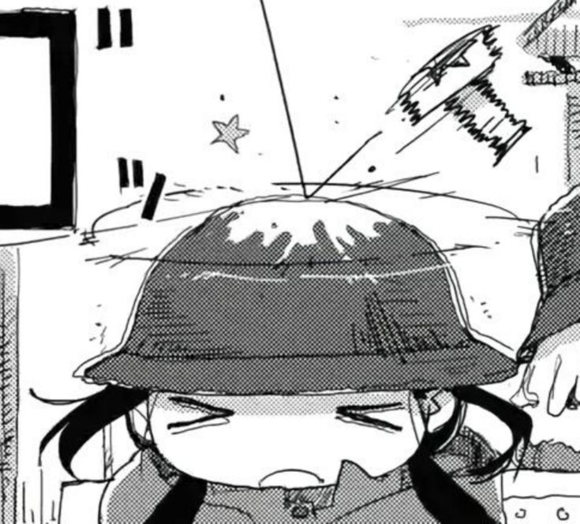
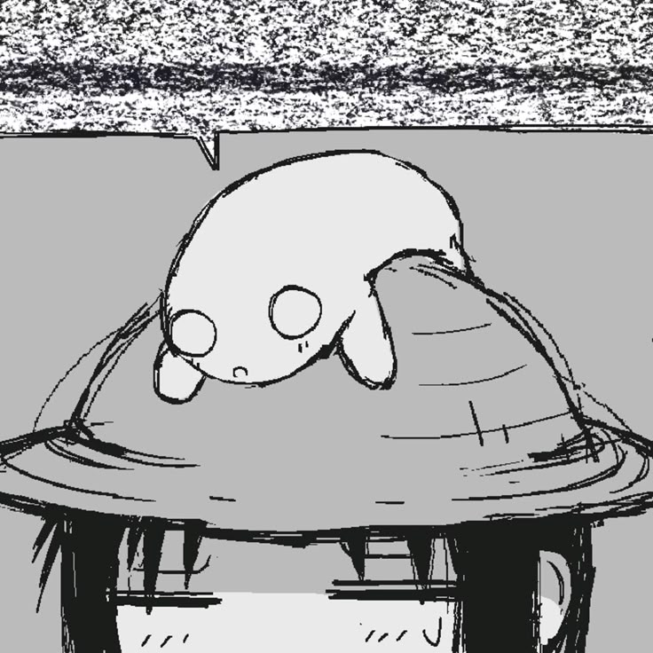

I typically make simple and chill songs in my free time
Although I have not made much since I haven't found the time yet
Usually I base my music off of game soundtracks
I don't typically share my work often so I figured I'd place it here
anxious night sky, to you i adore
It's my first full song, that I actually finished..yume nikki snow world inspired song
Based on yume nikki's snow world song, I wanted to create something similar.
all that remains
It's a really short song, it only took me an hour or so..
crystals in a birthday cave
I made this for someone's birthday! You'll notice if you can hear a birthday motif.That's all! I wanted to place some of my drawings here too,
but I kinda don't want to so I won't. haha